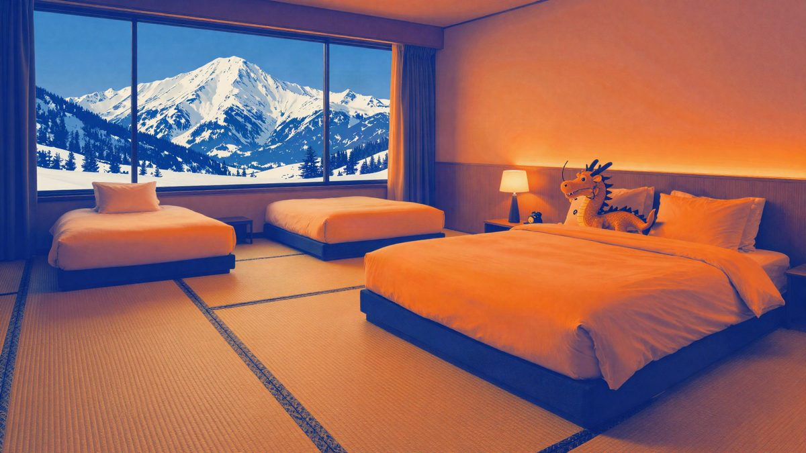

Pokémon soba u Fukuiju: hotel u Awari ima sobu posvećenu Dragoniteu

Hotel Awara Onsen Grandia Housen u japanskoj prefekturi Fukui otvorio je rezervacije za Traveling Dragonite Room, sobu s motivima Dragonitea za do šest gostiju. Najraniji termin je 29. studenoga, a cijena još nije poznata.
U japanskoj prefekturi Fukui dostupna je za rezervacije tematska Pokémon soba. Traveling Dragonite Room nalazi se na 11. katu hotela Awara Onsen Grandia Housen u toplicama Awara, a može primiti do šest gostiju. Rezervacije su otvorene preko web stranice hotela, a najraniji slobodni termin je 29. studenoga.
Dragonite je u Fukuiju službeni Pokémon ambasador za turizam. Prefektura je poznata po fosilima dinosaura pronađenima na njezinu području, a japanska riječ za dinosaura, kyoryu, doslovno znači „strašni zmaj". Zato je zmajoliki Dragonite bio prirodan izbor za partnera u projektu Pokémon Local Acts. Projekt skreće pozornost na lijepe i zanimljive dijelove Japana koje turisti često zaobilaze jer se zadržavaju u najvećim gradovima i oko najpoznatijih atrakcija.
Što je u sobi
Soba ima spavaći i dnevni dio, a u njoj su stotine prikaza Dragonitea. Pokémon je motiv tapiserija, tkanih jastučnica, staza za krevet i navlaka za jastuke. Prema izvoru, sve to su izradili lokalni umjetnici iz Fukuija tradicionalnim tehnikama. Na krevetima su i plišane igračke Dragonitea, a u priopćenju nije navedeno mogu li ih gosti ponijeti kući pri odjavi.
Dnevni dio ima tatami pod i uzdignutu nišu s dodatnom Dragonite umjetninom. Soba ima vlastiti tuš i kadu. Hotel ima toplice, pa gosti mogu koristiti i zajedničke tradicionalne onsen kupelji, među kojima su i one na otvorenom na krovu.
Soba je namjerno na 11. katu. Pogled obuhvaća obližnje planine i ravnicu Sakai, a to bi trebalo odgovarati perspektivi koju Dragonite ima kad leti nad Fukuijem.
Fukui izvan uobičajene rute
Fukui je prilično daleko od linije Tokio-Osaka, na kojoj većina posjetitelja Japana provodi najviše vremena. Silazak sa „zlatne rute" može se isplatiti manje poznatim lokacijama, a noćenje u sobi s temom Dragonitea moglo bi takav izlet dodatno upotpuniti.
Izvor: SoraNews24